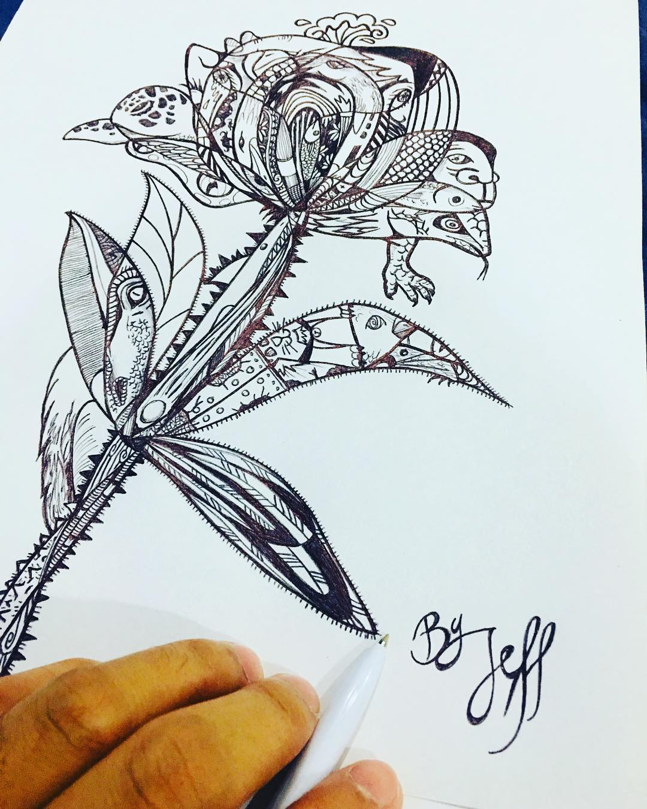
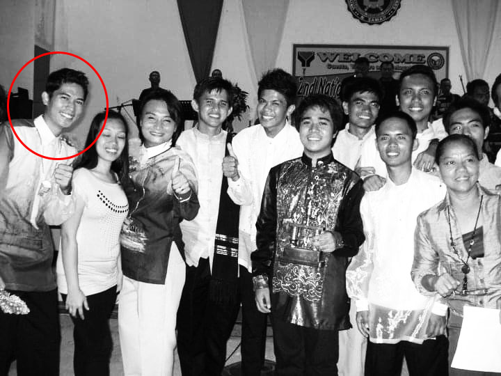

Hobbies & Interests

I am a born artist. I love drawing, paintings, and doing art and crafts. We inherit this talent from our father. That is why, since elementary days, we always end up joining events such as poster making. I graduated from high school with the award of "Artist of the Year."

Leading a team is also my passion. It was fun leading different activities and building a new circle of friends.
“Management is doing things right; leadership is doing the right things.” - Peter F. Drucker, author and educator.
“A one-hour workout is 4% of your day. No excuses.”
I also engage in physical activities like running, brisk walking, and indoor activities like a home workout. If I have time, I am joining fun-run activities with friends - I am a highly sociable person.
I am also passionate about cooking. I love learning new dishes and adding my techniques while cooking. That is why, during this pandemic, I started my own Youtube channel called "Cooking ng Kuya Mo." (click the photo to view my channel)